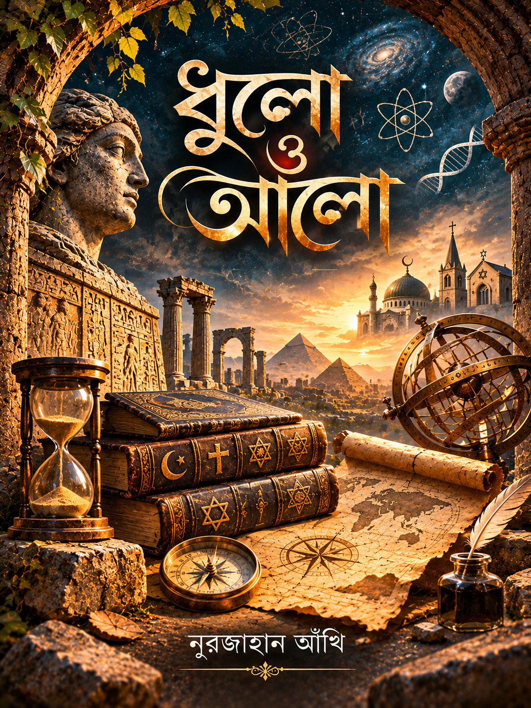

PROSE · REFLECTIONS
নিঃশব্দের নোটবুক
নীরবতা, স্মৃতি, একাকিত্ব, মানুষের অদেখা অনুভূতি এবং জীবনের ছোট ছোট মুহূর্ত নিয়ে পনেরোটি গদ্য ও ভাবনার সংকলন।
বইটি পড়ুন →কবিতা ও গল্পের বাইরেও কিছু অনুভব, কিছু চিন্তা, কিছু প্রশ্ন এবং ইতিহাসের পথে আলোর অনুসন্ধান। এই সংগ্রহে রয়েছে আমার অন্যান্য সাহিত্যকর্ম।
নীরবতা, স্মৃতি, একাকিত্ব, মানুষের অদেখা অনুভূতি এবং জীবনের ছোট ছোট মুহূর্ত নিয়ে পনেরোটি গদ্য ও ভাবনার সংকলন।
বইটি পড়ুন →
আদম (আ.) থেকে শেষ নবী ﷺ — তিনটি সূত্রে মানবইতিহাসের পাঠ। প্রত্নতত্ত্ব ও বিজ্ঞানের আলোচনার পাশাপাশি বাইবেল ও কুরআনের সূত্র ধরে মানবসভ্যতার ইতিহাস অনুসন্ধান।
বইটি পড়ুন →